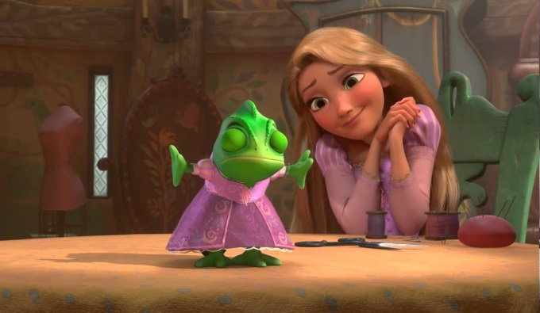
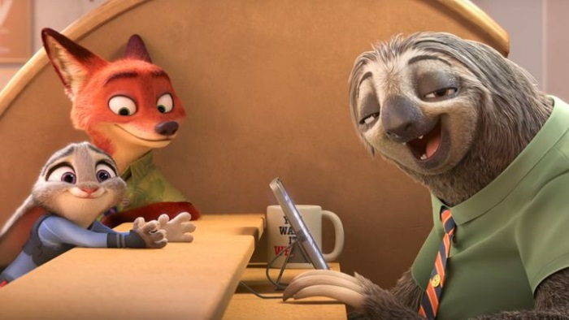
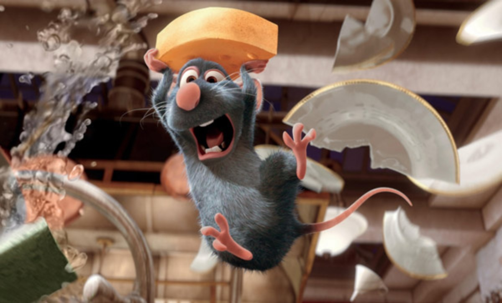
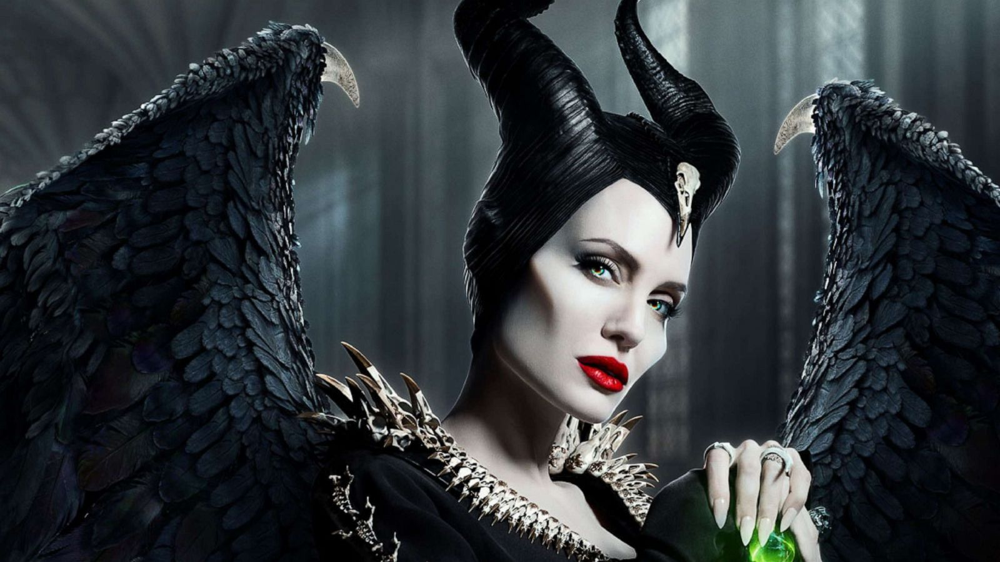

Honorable mentions
Omdat ik het eigenlijk heel moeilijk vond om een top 3 samen te stellen, is hier een pagina met nog allemaal andere films van Disney die ik ontzettend leuk en goed vond, die zeker het nog waard zijn om benoemd te worden. Zo zijn er nog meer filmideeën om toe te voegen aan je lijstje om te kijken tijdens de kerstvakantie of op wat moment dan ook!
Rapunzel (2010)
Rapunzel is gemaakt om de vijftigste film van Disney Studio’s te vieren. De film werd een hit, met de vrolijke en enthousiaste Rapunzel en de knappe Flynn. Disney bewijst met deze film wat ze het beste kunnen: een klassiek verhaal op een originele, mooie en ook grappige manier brengen. Bovendien is deze film het opstapje geweest naar het grote succes van Frozen, de film die een aantal jaar later een nog grotere hit werd.
Zootopia (2016)
Zootopia is een soort van ‘LA Confidential’ maar dan een stad vol pratende dieren. De vos Nick wordt ten onrechte beschuldigd van een misdaad en de politieagente konijn Judy zit achter hem aan. Ze moeten echter gaan samenwerken als blijkt dat ze het doelwit zijn geworden van een samenzwering.
Ratatouille (2007)
Ratatouille uit 2007 is mogelijk één van de bekendste geanimeerde Disney film. Remy, een rat, heeft een gave voor smaken en droomt ervan om een grote Franse topkok te worden. Zijn familie ziet dit echter niet graag gebeuren en ziet eten als een manier om te overleven. Bovendien zijn mensen in de kookwereld ook niet echt verzot op ratten.
Maleficent (2014)
Een mooie twist op het sprookje "Doornroosje" maar dan met een donkere twist. Maleficent is een machtige fee en beschermvrouwe van de Moors, een woest gebied waar de natuur en magie vrij spel hebben. Op een dag ontmoet Maleficent een jongen van haar leeftijd, Stefan. Ze sluiten vriendschap en worden verliefd, maar uiteindelijk vervreemdt Stefan van haar wanneer hij voor zijn ambities kiest...
Zoals misschien al opgemerkt, heb ik op mijn website vooral animaties en live-action
films van Disney benoemd in mijn lijstje en geen klassiekers, zoals bijvoorbeeld
de Lion King. Nou moet ik bekennen dat ik eigenlijk bijna geen klassieker heb
gekeken, maar het eigenlijk wel zou moeten doen........
Ken jij meer Disney films die ik absoluut moet kijken?
Mail je suggestie dan naar 113344@emmauscollege.nl
en ik zal het op mijn "to watch" lijstje zetten:)